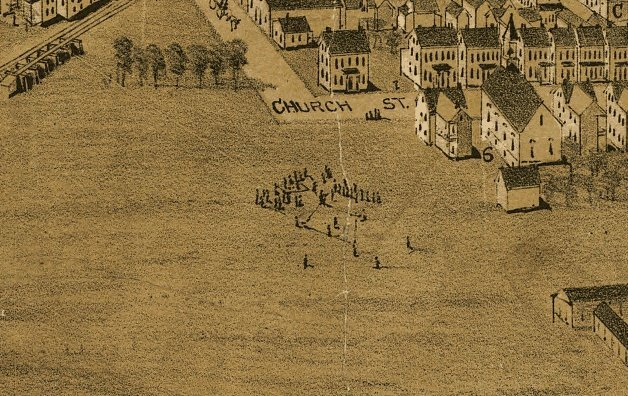

| Ephrata, Pennsylvania - 1887 |
|---|
 |
| View of Ephrata, Pennsylvania. Fowler, T. M. (Thaddeus Mortimer), 1842-1922. CREATED/PUBLISHED Morrisville, Pa., 1887. NOTES Perspective map not drawn to scale. Bird's-eye-view. LC copy imperfect: edges and sections of pictorial border missing. Includes illus. and index to points of interest. REFERENCE LC Panoramic maps (2nd ed.), 771.1 |